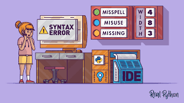

🌟 El Viaje del Código 🌟
Por JuanSucer Dev
Bienvenido a esta historia de superación digital. ¡haz clic para comenzar!
Capítulo 1: El Primer Error
Todo comenzó con un simple "SyntaxError". Fue su primer paso en el mundo de la programación. Un mundo lleno de paréntesis, punto y coma, y mucha lógica.
El nunca olvidaría ese momento. La pantalla negra de la terminal mostraba un mensaje rojo que parecía gritarle. No entendía qué había hecho mal, pero sabía que tenía que resolverlo.
Tras horas de investigación, descubrió que solo faltaba un carácter: un simple paréntesis de cierre. Algo tan pequeño había detenido todo su programa.
Capítulo 2: El Código que lo Cambió Todo
Un día, el descubrió cómo usar JavaScript para crear vida en una página web. Sus botones cobraban sentido, y sus ideas se transformaban en interfaces.
Había pasado noches enteras aprendiendo los fundamentos, viendo tutoriales y practicando en pequeños proyectos. Pero este era diferente. Este proyecto tenía alma.
Su aplicación ayudaba a personas mayores a conectarse con sus familias. Cada línea de código tenía un propósito, cada función resolvía un problema real.

Capítulo 3: Comunidad y Colaboración
El verdadero poder del código no estaba en la sintaxis o en los algoritmos, sino en la comunidad. el comenzó a compartir su trabajo en GitHub y a contribuir en proyectos de código abierto.
Pronto, desarrolladores de todo el mundo mejoraban su código, añadían funcionalidades y expandían su visión original.
Las discusiones en los foros, los pull requests y las revisiones de código se convirtieron en conversaciones que trascendían fronteras y zonas horarias.

Gracias por leer
El viaje de Juan continúa cada día, con nuevos retos, nuevos errores y nuevas soluciones. Porque el camino del programador nunca termina.
Esperamos que esta pequeña historia te inspire a seguir explorando, creando y compartiendo tu código con el mundo.
Fin del libro 📘
¿Te gustaría empezar tu propio viaje del código? Recuerda que cada error es una oportunidad para aprender, y cada línea de código es un paso hacia adelante.